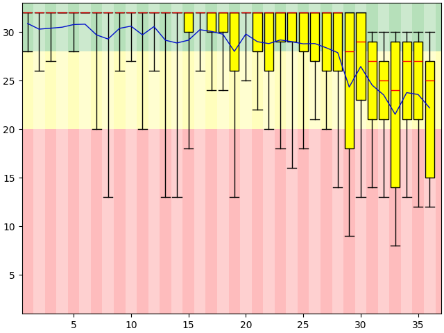
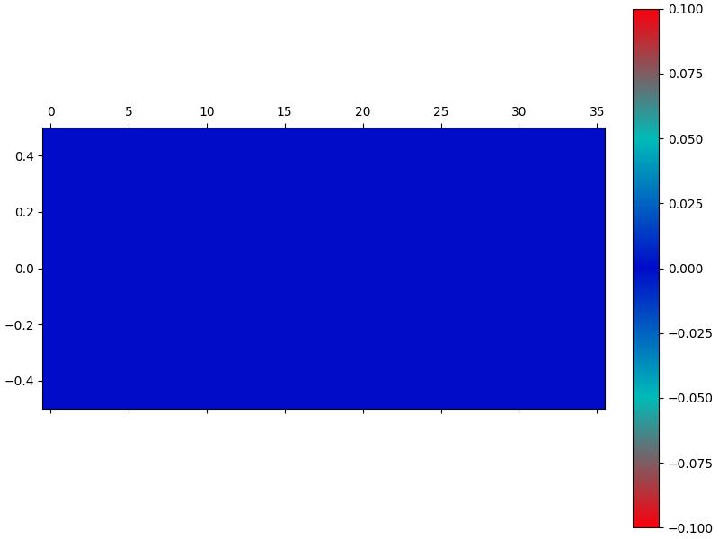
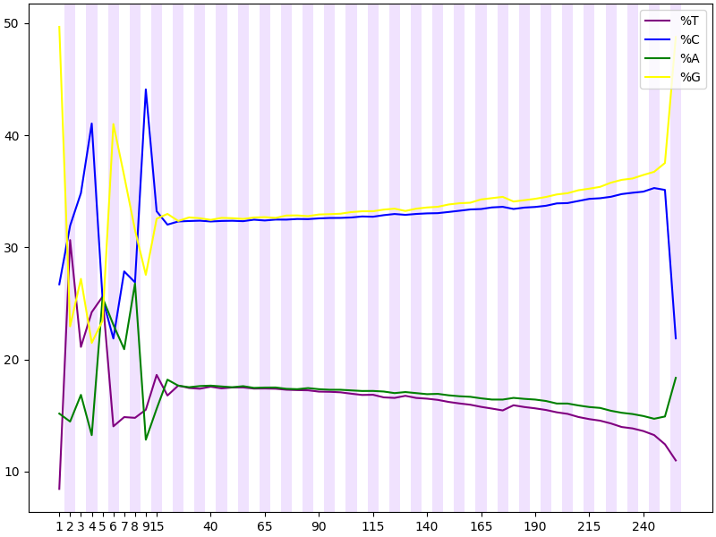
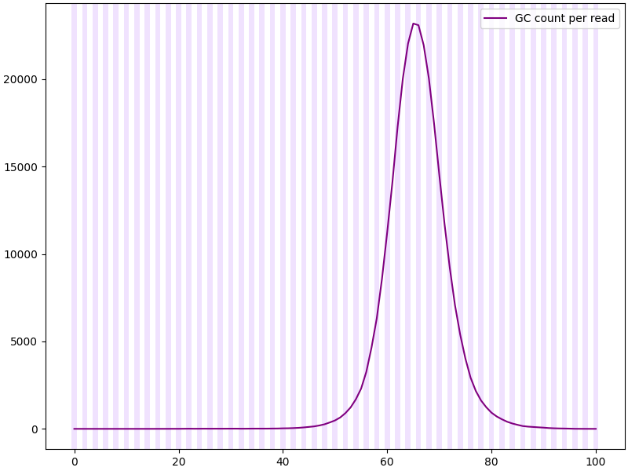
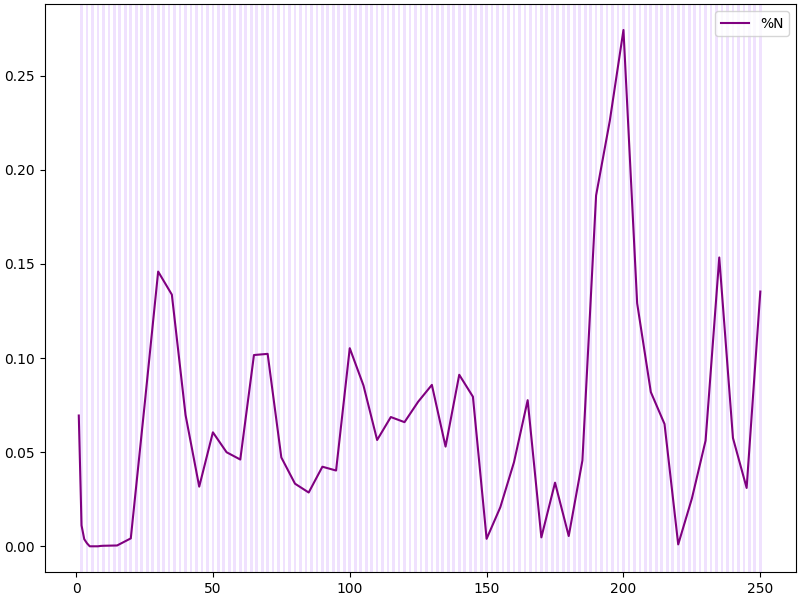
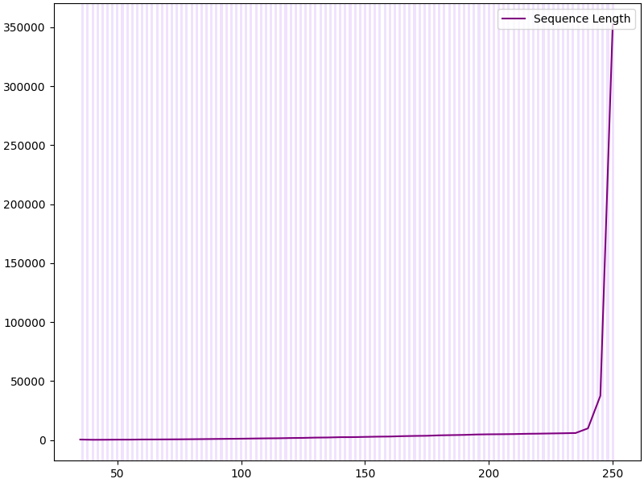
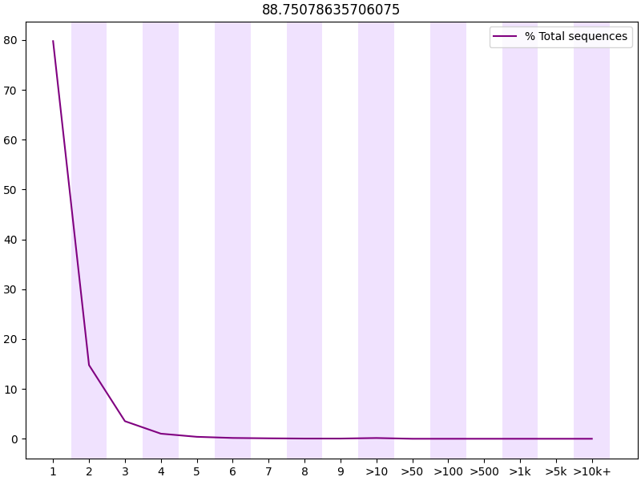
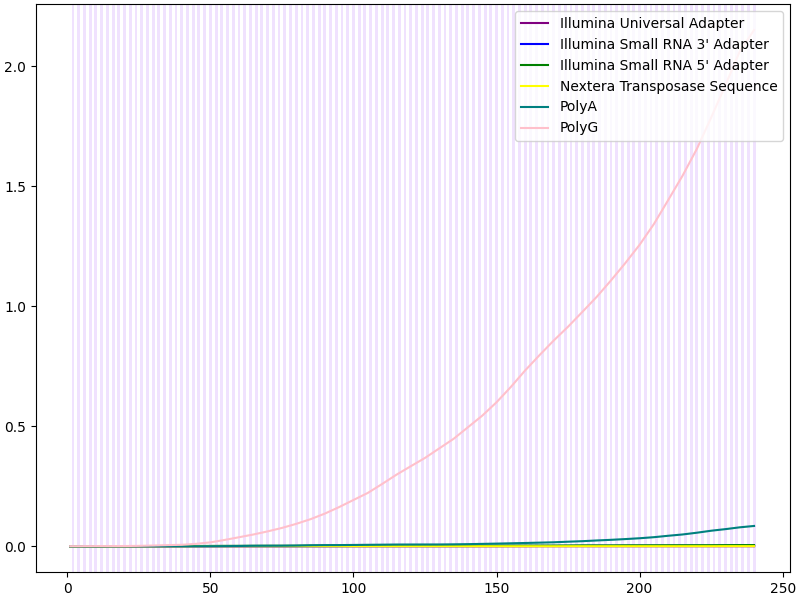

![{{icons[0]}}](../static/images/Icons/{{icons[0]}}_pink.png) Basic Statistics
Basic Statistics
{{basic_table | safe}}
![{{icons[1]}}](../static/images/Icons/{{icons[1]}}_pink.png) Per base sequence quality
Per base sequence quality
Quality scores across all bases ({{encoding}}) 
![{{icons[2]}}](../static/images/Icons/{{icons[2]}}_pink.png) Per tile sequence quality
Per tile sequence quality

![{{icons[3]}}](../static/images/Icons/{{icons[3]}}_pink.png) Per sequence quality scores
Per sequence quality scores

![{{icons[4]}}](../static/images/Icons/{{icons[4]}}_pink.png) Per base sequence content
Per base sequence content

![{{icons[5]}}](../static/images/Icons/{{icons[5]}}_pink.png) Per sequence GC content
Per sequence GC content

![{{icons[6]}}](../static/images/Icons/{{icons[6]}}_pink.png) Per base N content
Per base N content

![{{icons[7]}}](../static/images/Icons/{{icons[7]}}_pink.png) Sequence Length Distribution
Sequence Length Distribution

![{{icons[8]}}](../static/images/Icons/{{icons[8]}}_pink.png) Sequence Duplication Levels
Sequence Duplication Levels

![{{icons[9]}}](../static/images/Icons/{{icons[9]}}_pink.png) Overrepresented sequences
Overrepresented sequences
{{overrepresented | safe}}
![{{icons[10]}}](../static/images/Icons/{{icons[10]}}_pink.png) Adapter Content
Adapter Content

![{{icons[11]}}](../static/images/Icons/{{icons[11]}}_pink.png) Kmer Content
Kmer Content
{{kmer | safe}}